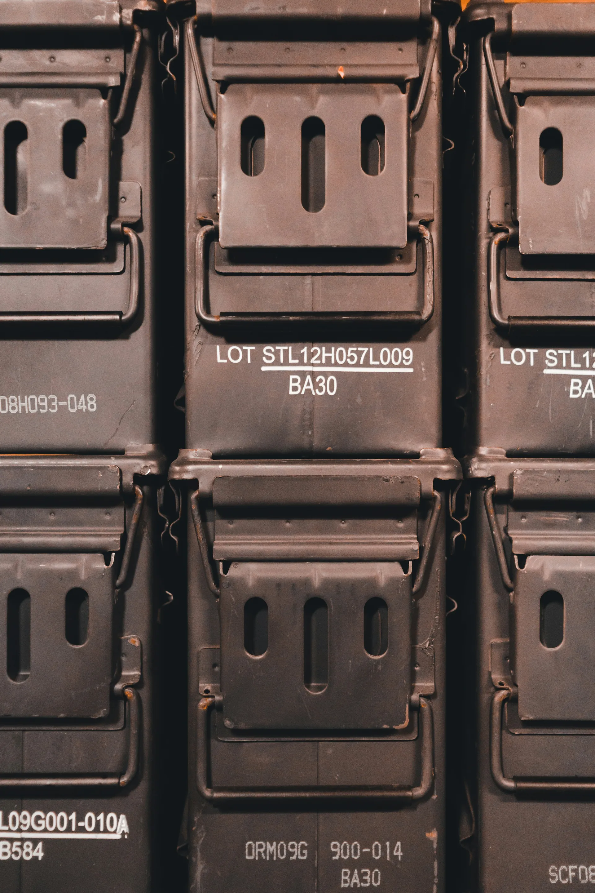
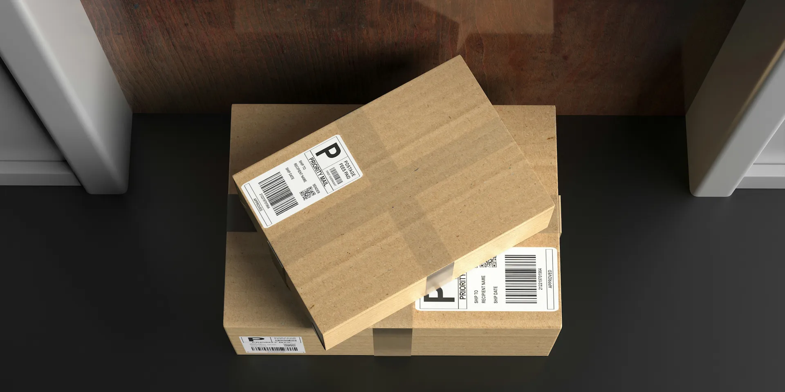

Contract Requirement Review
Review of packaging, marking, labeling, shipment, and delivery instructions listed in the solicitation or contract.
MIL-STD Packaging Support
Semper Fi Services supports government supply execution through MIL-STD packaging awareness, DLA packaging requirement review, MIL-STD-2073 preservation awareness, MIL-STD-129 marking awareness, documentation control, labeling coordination, and shipment readiness support.
Packaging Support
Government and defense supply contracts often include packaging, preservation, marking, labeling, unit pack, quantity-per-unit-pack, and shipment documentation requirements that must be reviewed before material is released.
Semper Fi Services supports packaging-aware execution by reviewing solicitation and contract requirements, coordinating supplier expectations, identifying packaging details early, and organizing shipment records so delivery is better aligned with government acceptance expectations.
Review of packaging, marking, labeling, shipment, and delivery instructions listed in the solicitation or contract.
Communication with suppliers to confirm whether packaging requirements can be supported before shipment release.
Review of quantity-per-unit-pack, unit of issue, pack-out expectations, and contract-specific packaging notes.
Packaging and documentation review before release to reduce preventable delivery or acceptance problems.
MIL-STD-2073
MIL-STD-2073 requirements may affect how items are preserved, packed, unitized, and prepared for shipment. Semper Fi Services does not treat packaging as an afterthought. Packaging awareness is part of the sourcing and release process.

Documentation Control
For government supply contracts, shipment evidence, packaging records, supplier communication, and delivery documentation matter. Semper Fi Services supports organized packaging-related records so shipment closeout can be supported with clear information.

MIL-STD-129
MIL-STD-129 marking expectations can affect how packages are identified, labeled, and prepared for government shipment. Incorrect or incomplete marking can create receiving problems, shipment delays, or acceptance issues.
Why SFS
Semper Fi Services is a veteran-led aerospace and government supply company focused on controlled sourcing, supplier coordination, documentation readiness, packaging awareness, and contract-aligned delivery.
Our goal is not to guess at packaging requirements after the fact. Our process is built to identify packaging and marking expectations early, communicate them clearly, organize records, and support shipment readiness before release.
Packaging Quote Intake
Send the NSN, part number, quantity, unit of issue, required delivery date, solicitation number, packaging instructions, preservation requirements, marking requirements, shipment destination, and any special handling details. We will review the request and determine whether Semper Fi Services can support the packaging-aware execution path.
Semper Fi Services supports MIL-STD packaging awareness across preservation, packing, marking, labeling, documentation control, and shipment record readiness. We help review MIL-STD-2073 packaging requirements, MIL-STD-129 marking expectations, DLA packaging instructions, supplier packaging coordination, and government-ready closeout support for aviation, defense, federal, and industrial supply requirements.